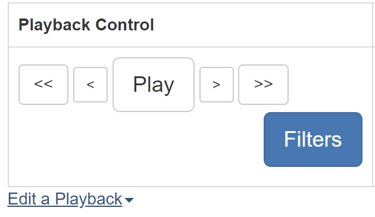
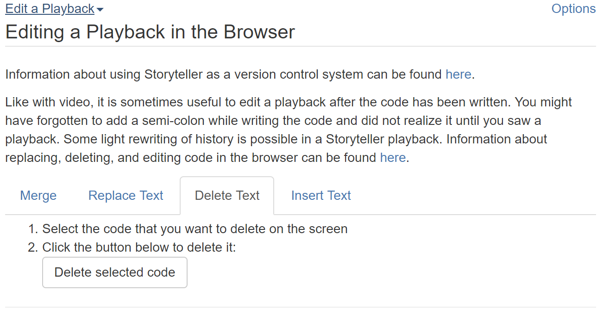
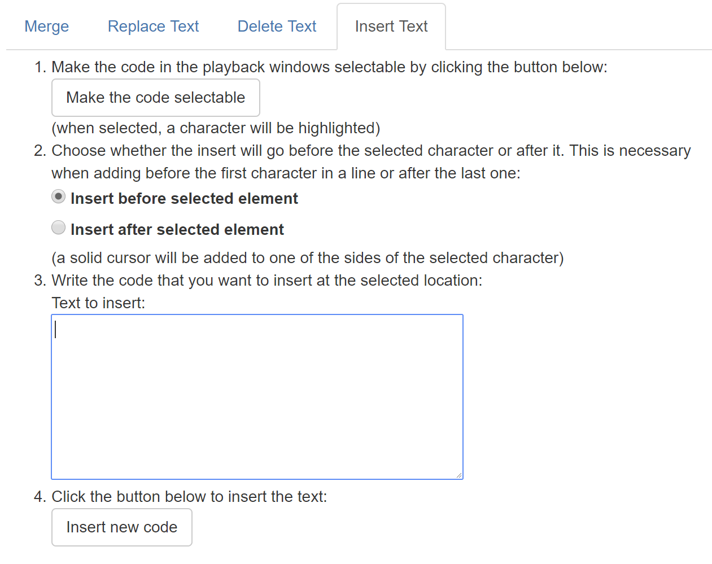
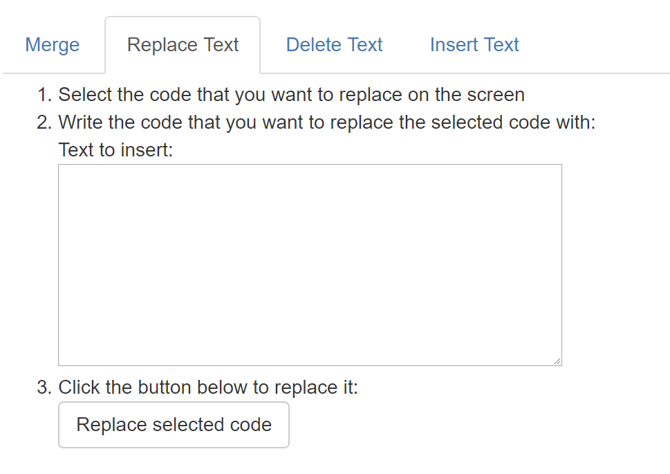

After you have written some code and are commenting on it, it is sometimes useful to go back and make some minor edits. You may have noticed that you left something out (like a semi-colon) that you wish you added when you were originally working on the code. Or, you may be updating a previous playback and want to change from using floats to doubles but you don't want to completely rewrite the example program.
You can pause the playback at any point and add, delete, or replace some new code. The new code will appear to have been included at that pause point. In other words, you can add the semi-colon and no one will ever know that you forgot to add it in the first place.
Similarly, if there is some code that you wish you hadn't put in it can be removed as if it was never written in the first place. For example, suppose that you added a variable with the intention of using it but you never did. You can select that from the playback window and remove it. It will not show up in the playback if you replay it.
There is an option to replace some code with some different code. This deletes the selected code and inserts the new code in its place. With these operations it is possible to 'rewrite' some history in a playback.
To begin editing the playback select the 'Edit a Playback' link underneath the playback controls. This will expand the editing and merging options.

Using these controls only affects the current playback in the browser, it does not change what is in your text editor. If you want those changes to persist then you can download the updated playback and work from the new copy. Here is some information on how to save a playback. The new copy will have the rewritten history in it. Since the edits don't change anything until they are downloaded it is possible to restart an editing session if the results aren't exactly what you want.
This editing of a playback in the browser should be used sparingly. If there are major changes to the code it makes more sense to use the editor and Storyteller plugin than trying to write a significant amount of code using this interface.
To delete some code, select it in the playback and choose the delete option.

Tip: When removing code, any text that was
ever inside the selected range of characters will also be permanently removed. For
example, if you wrote the code int x; and then later in the future you
added an intialization to it like this, int x = 10;, then all of that
code is related. If you pause the playback when the code looks like this int x;
and select it to be deleted then those future events = 10 will be
removed as well because they won't make much sense without the variable declaration.
A playback is a recreation of a set of events in the order that they were created. You can add new code into this sequence by pausing a playback, selecting where you want the new code to go, and then adding a group of text. This new text will be turned into a set of Storyteller events and then inserted in the sequence at the pause point. The new events will have an accurate timestamp but otherwise they will appear to have happened near the pause point.
To select an insert point the user must first choose to make the code selectable. Next, the user will select whether to insert the code before or after the selected character. Finally, the user will choose a single character on the playback window. The selected character's background color will change to white and a cursor will be added either to the left or right of the selected character depending on the previous choice. Any text in the insert textbox will be added to the sequence of events and will be played back in the playback.

Replacing code involves selecting code at a certain pause point and replacing it with some text. This is essentially a combination of the previous two operations. So, the pause point is important to specify where the replaced code characters will go in the sequence of events.
